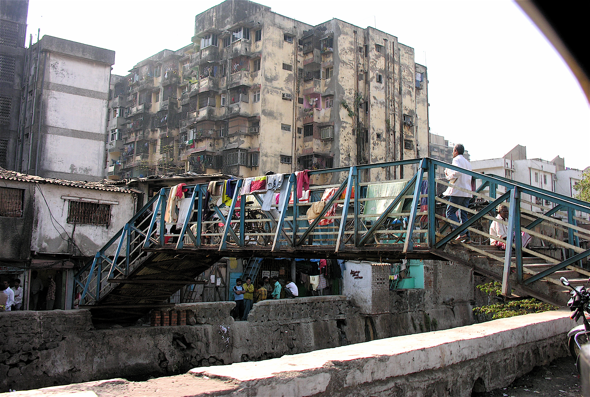

The world of the Freak Show is more unaccepting than our own. If you are “different” you will face violence, neglect, despise and ridicule every day. It is a widely accepted fact that different people are of less value than the normal ones and can be treated inhumanely. In Freak Show’s world normal is defined narrowly. You are either a healthy, caucasian, monogamous heterosexual, man or a woman, who acts and look just like everyone else, or you are a freak.
What is a Freak Show?
The freaks have resorted to the only thing they can to survive. They have changed their difference into a business. The freaks have created a safe harbor for themselves, a place outside the rules and troubles of normal society where they can live and thrive. The freaks are selling their otherness and also an entrance to a magical place outside the norm. The normal people can gawk at them, be horrified, be awed, be entertained or maybe even explore what is usually impossible for them. The Freak Show is an un-place, outside normal and thus magic by nature.
To the freaks the Freak Show is a family. They have no other place to go to nor anyone else to stand up for them. The freaks look out for each other and are loyal to each other. Inside the Freak Show’s area they feel safe.
To the normals the freaks are safely contained in the space they have created, a small separate world the normals can endure and visit for entertainment. Therefore to the freak family the Freak Show is also freedom. In the Freak Show they can be what they are without hiding. They have jurisdiction and power over this small place they have made for themselves.
Since the Freak Show is outside normal and it also feels like a place where everything might be possible. There is constantly magic in the air when normal rules don’t apply. The freaks are very superstitious and all have their own magic and tales to tell. The fabric between real and unreal is thin and easily crossed.
The Story
The Freak Show is a traveling circus group led by two sisters. The sisters have gathered the group. Some of them they have saved from the streets, from orphanages, from mental institutions, all those dark places people who don’t fit the norm get sent to keep them hidden from sight. Some freaks have come to them. Sometimes a person or two leaves the town with them. Some have come to them from other traveling groups.
The time of traveling carnivals, circuses, sideshows and freaks shows is already gone. It’s impossible to compete with all the other entertainment available. Group after group they have stopped and the Sister’s group is the last. So there are refugees from the other shows who are searching for a safe harbour, the ones that can’t adjust to any other way of life.
Recent events
The Sister’s have always had the dream of creating a safe haven for their group. A permanent home offering stability and security. Last month they met a man who promised them all that, beautiful like an angel. They made a deal with the Beautiful Man. He offered them a place of their own in exchange for one show on Midsummer’s Eve. Sure it was a strange deal, and there is that old tale of performing on Midsummer’s Eve, but this might be the only chance they’ll ever get.

So the Sister agreed, signed the papers and got an abandoned run down amusement park in a city by the sea. They want to create a permanent Freak Show and make a living in this town. The group has put up the main tent in the park and are staying at the camping site near by. The Sisters had to sell their caravans to get money to start renovating the park and the buildings in the park are not yet fit for living.
What happens during the larp?
Tomorrow it will be Midsummer’s Eve. The town folk will be drunk and celebrating. Tomorrow you will have to have your premiere show in this town to complete the deal the Sisters made with the Beautiful Man. The Sisters say town’s folk will be in a more accepting mood and it’ll be a great success. But there is that very old story told among the circus folk that if you perform during Midsummer the devil will come to the show. The Sisters say it is nothing but a fairytale. Also, you urgently need more money to buy materials for the renovations. You can’t stay at the campsite for too long. You can already feel the hate building in the stares of the normals sharing that space with you.
Some of you are restless, some of you believe that this might work. Some of you are making protective spells to keep the devil out. There’s a lot of talk on who the Beautiful Man actually is and why did he offer such an odd deal. Is this your salvation or your doom?
But you keep practicing your acts, you keep working, that’s what you do to survive.
The World
The world of our larp is a harsh one, but it is increasingly not unlike our own. The cities of Europe are decaying - times are bad for everyone, not just the freaks. Maybe there are pockets of wealth, but in general things have stopped being shiny a long time ago. Slums everywhere. Freaks are just the lowest of the low. No one cares about them other than as a form of cathartic entertainment; folks pass by and think “at least we’re not like them.”

Government
Governments will not waste money on anyone who is non-productive. Those who are outside of the accepted norm are unemployable and therefore a drain on society. There are no friends to be found in positions of authority. The world is pro-austerity, pro-business, and nationalist. God help you if you get sick. And speaking of God …
Religion
The Christian Church has changed too. When the USA closed its borders and started to repatriate even second and third generation immigrants, many Scandinavian-Americans were sent back to the land of their forefathers. Bringing with them a form of Southern Baptist Christianity that merged with Finnish Lutheranism. This New Christianity quickly spread. A religion that frowns on excess, on entertainment, on conspicuous consumption merged with fire and brimstone. The Freaks are a manifestation of the end times. They are at best not to be trusted, at worst the instruments of evil.
For seven years there have been droughts and floods. In America the dust bowl has returned and the farms are barren. There is not enough food to feed the world. Elsewhere the seas are rising. The Netherlands are underwater. The phrase “remember the low countries” is used as a dire warning for the power God has to punish sinners.
(This is not to say there are no good Christian characters, but rather that the organised Church is not a friend of the circus.)